Geometry, planning and identity become coordinated information.
BIM + Digital Delivery · Jeddah
Pakistan Main Consulate Villa — BIM Journey
The digital model carries design intent into coordinated delivery information.
Delivery logic becomes visible and reviewable.
Project knowledge continues into operation.
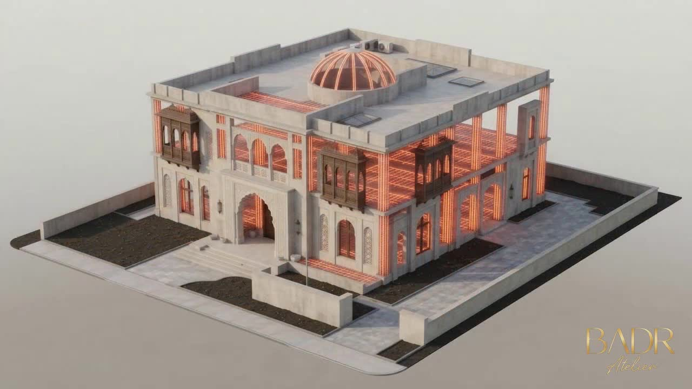
Featured BIM Film
Model intelligence, seen in motion.
The film reveals structure, geometry and coordinated building information.
Digital Design Evidence
The building becomes a coordinated information model.
Selected BIM frames reveal one connected digital building.
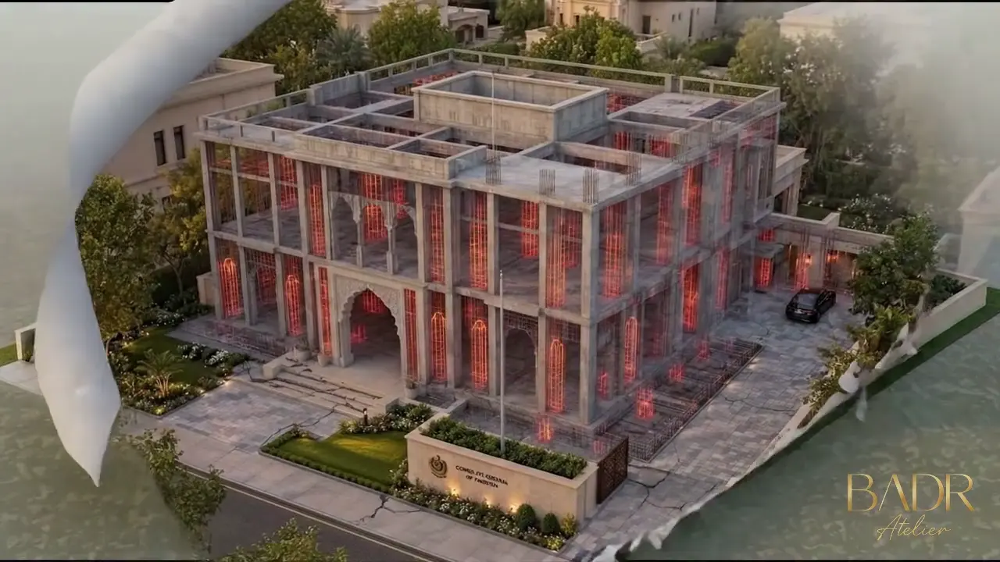
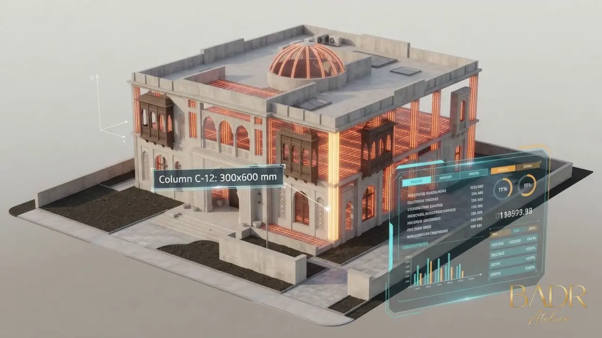
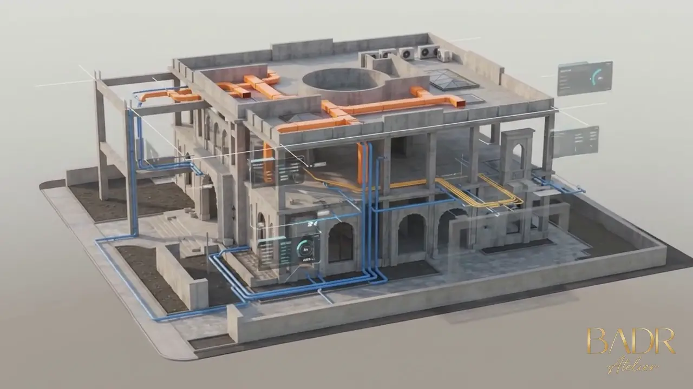
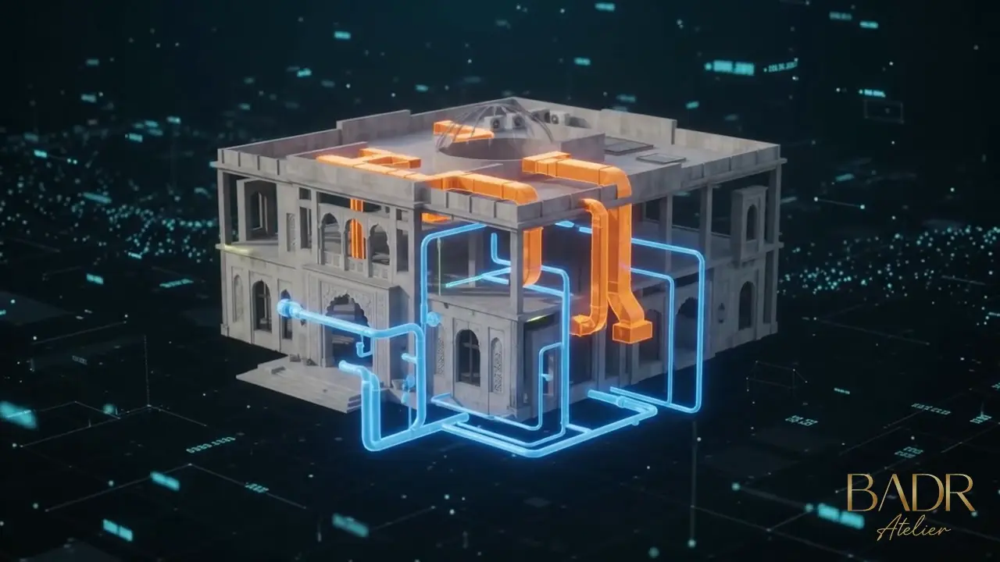
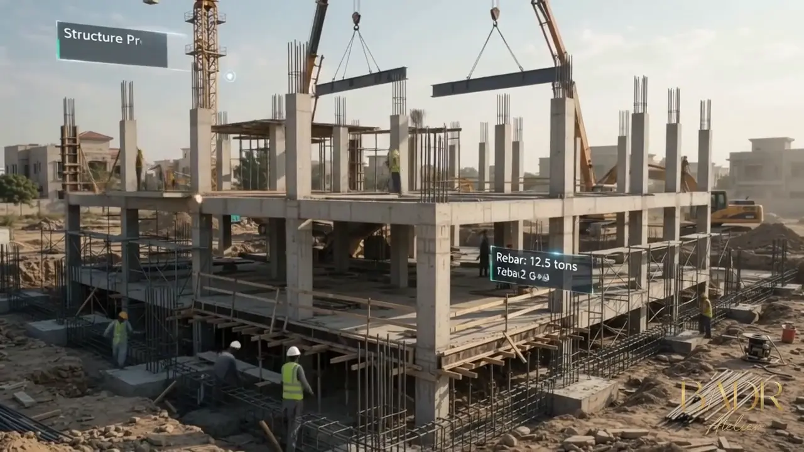
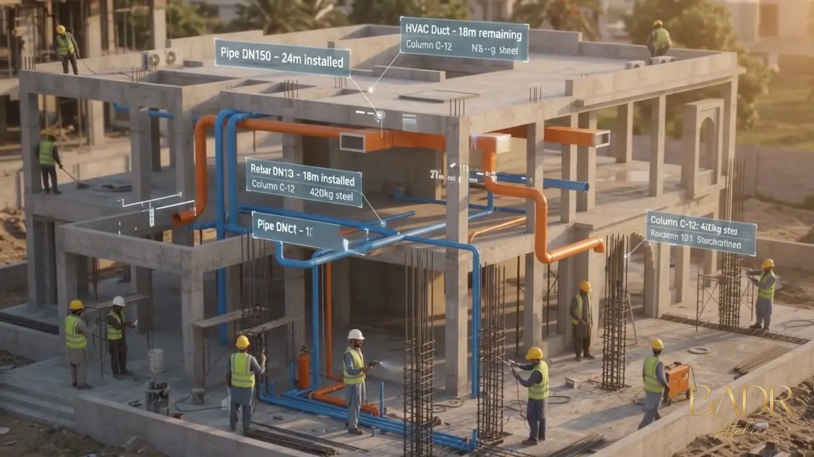
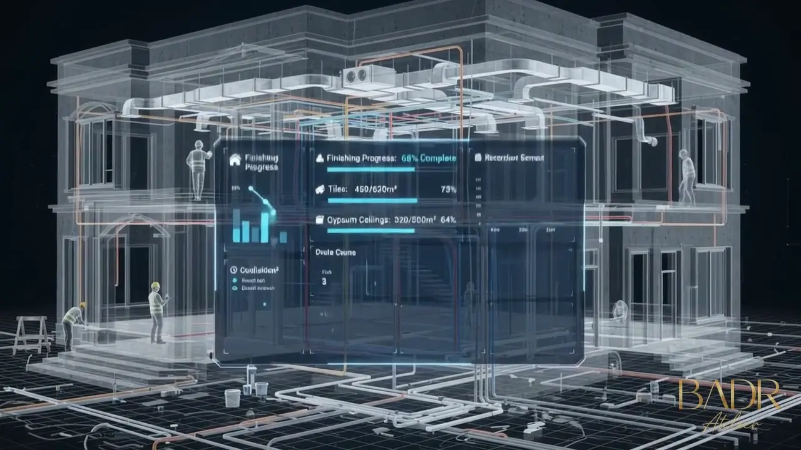
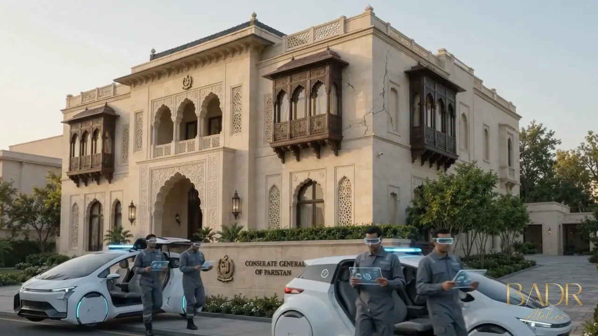
BIM Lifecycle
Design → Build → Operate
BIM is framed as a continuous information flow from design to operation.
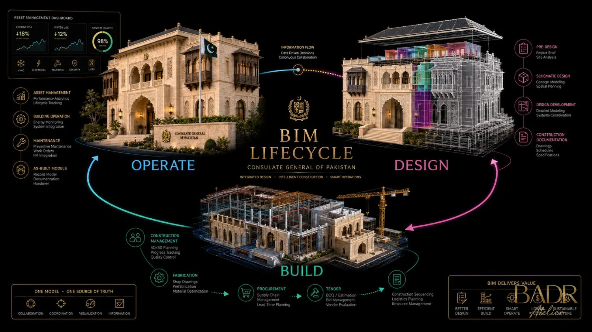
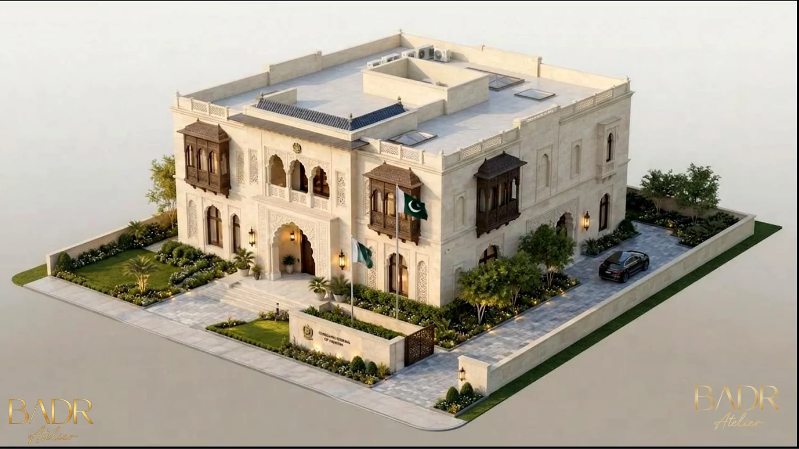
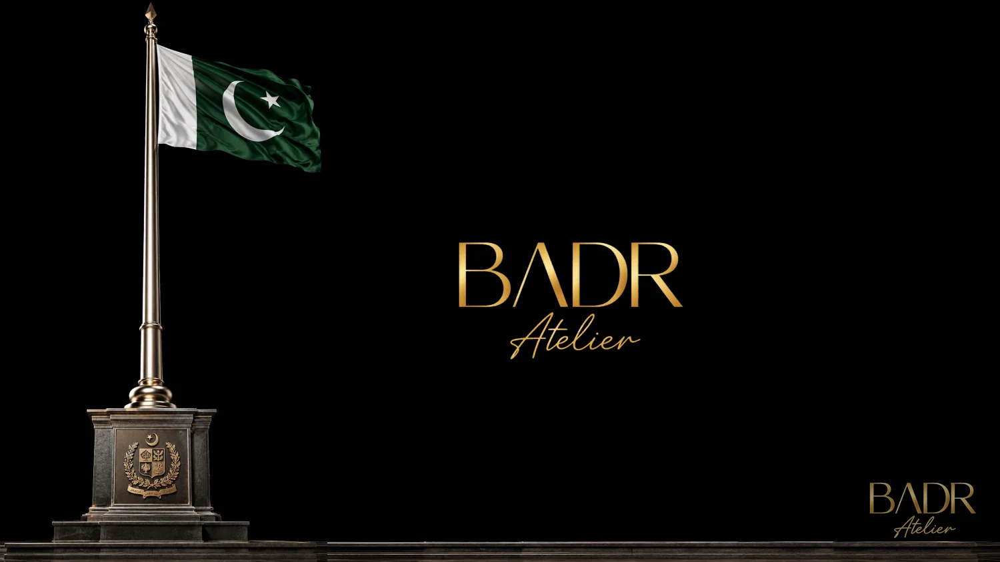
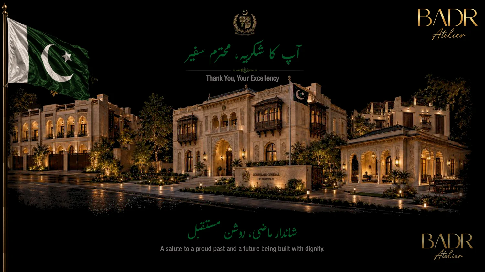
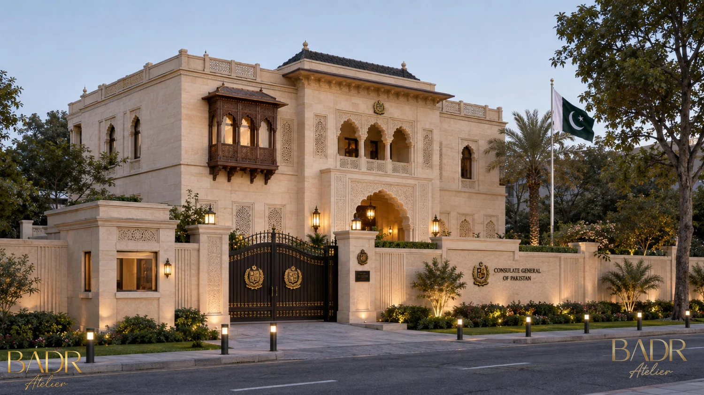
Back to the Architecture
The model exists to protect the building idea.
BIM protects identity, buildability and project knowledge.
View Full Architectural Project